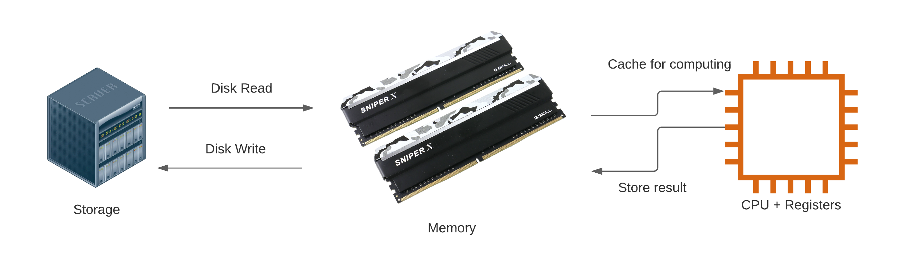

Large Data in R: Tools and Techniques
Set Up and Example Data
The examples and exercises require R and several R packages, including
tidyverse, data.table, arrow, and duckdb. This software is all
installed and ready to use on the HBS Grid. If running elsewhere make sure
these required software programs are installed before proceeding.
You can download and extract the data used in the examples and exercises from https://www.dropbox.com/s/vbodicsu591o7lf/original_csv.zip?dl=1 (this is a 1.3Gb zip file). These data record for-hire vehicle (aka “ride sharing”) trips in NYC in 2020. Each row contains the record of a trip and the variable descriptions can be found in https://www1.nyc.gov/assets/tlc/downloads/pdf/data_dictionary_trip_records_hvfhs.pdf
Nature and Scope of the Problem: What is Large Data?
Most popular data analysis software is designed to operate on data
stored in random access memory (aka just “memory” or “RAM”). This makes
modifying and copying data very fast and convenient, until you start
working with data that is too large for your computer’s memory system.
At that point you have two options: get a bigger computer or modify your
workflow to process the data more carefully and efficiently. This
workshop focuses on option two, using the arrow and duckdb packages
in R to work with data without necessarily loading it all into memory at
once.
A common definition of “big data” is “data that is too big to process using traditional software”. We can use the term “large data” as a broader category of “data that is big enough that you have to pay attention to processing it efficiently”.
In a typical (traditional) program, we start with data on disk, in some format. We read it in to memory, do some stuff to it on the CPU, store the results of that stuff back in memory, then write those results back to disk so they can be available for the future, as depicted below.
 The reason most data analysis software is designed to process data this way is because “doing some stuff” is much much faster in RAM than it is if you have to read values from disk every time you need them. The downside is that RAM is much more expensive than disk storage, and typically available in smaller quantities. Memory can only hold so much data and we must either stay under that limit or buy more memory.
Problem example
Grounding our discussion in a concrete problem example will help make things clear. I want to know how many Lyft rides were taken in New York City during 2020. The data is publicly available as documented at https://www1.nyc.gov/site/tlc/about/tlc-trip-record-data.page and I have made a subset available on dropbox as described in the Setup section above for convenience. Documentation can be found at https://www1.nyc.gov/assets/tlc/downloads/pdf/data_dictionary_trip_records_hvfhs.pdf
In order to demonstrate large data problems and solutions I’m going to artificially limit my system to 4Gb of memory. This will allow us to quickly see what happens when we reach the memory limit, and to look at solutions to that problem without waiting for our program to read in hundreds of Gb of data. (There is no need to follow along with this step, the purpose is just to make sure we all know what happens when you run out of memory.)
Start by looking at the file names and sizes:
fhvhv_csv_files <- list.files("original_csv", recursive=TRUE, full.names = TRUE)
data.frame(file = fhvhv_csv_files, size_Mb = file.size(fhvhv_csv_files) / 1024^2)
## file size_Mb
## 1 original_csv/2020/01/fhvhv_tripdata_2020-01.csv 1243.4975
## 2 original_csv/2020/02/fhvhv_tripdata_2020-02.csv 1313.2442
## 3 original_csv/2020/03/fhvhv_tripdata_2020-03.csv 808.5597
## 4 original_csv/2020/04/fhvhv_tripdata_2020-04.csv 259.5806
## 5 original_csv/2020/05/fhvhv_tripdata_2020-05.csv 366.5430
## 6 original_csv/2020/06/fhvhv_tripdata_2020-06.csv 454.5977
## 7 original_csv/2020/07/fhvhv_tripdata_2020-07.csv 599.2560
## 8 original_csv/2020/08/fhvhv_tripdata_2020-08.csv 667.6880
## 9 original_csv/2020/09/fhvhv_tripdata_2020-09.csv 728.5463
## 10 original_csv/2020/10/fhvhv_tripdata_2020-10.csv 798.4743
## 11 original_csv/2020/11/fhvhv_tripdata_2020-11.csv 698.0638
## 12 original_csv/2020/12/fhvhv_tripdata_2020-12.csv 700.6804
We can already guess based on these file sizes that with only 4 Gb of RAM available we’re going to have a problem.
## Error in eval(expr, envir, enclos): cannot allocate vector of size 7.6 Mb
Perhaps you’ve seen similar messages before. Basically it means that we don’t have enough memory available to hold the data we want to work with. I previously ran the code chunk above with more memory and found that it required just over 16 Gb. How can we work with data when we only have 1/4 of the memory requirement available?
An example of a large object causing a bottleneck
General strategies and principles
Part of the problem with our first attempt is that CSV files do not make it easy to quickly read subsets or select columns. In this section we’ll spend some time identifying strategies for working with large data and identify some tools that make it easy to implement those strategies.
Use a fast binary data storage format that enables reading data subsets
CSVs, TSVs, and similar delimited files are all text-based formats that are typically used to store tabular data. Other more general text-based data storage formats are in wide use as well, including XML and JSON. These text-based formats have the advantage of being both human and machine readable, but text is a relatively inefficient way to store data, and loading it into memory requires a time-consuming parsing process to separate out the fields and records.
As an alternative to text-based data storage formats, binary formats have the advantage of being more space efficient on disk and faster to read. They often employ advanced compression techniques, store metadata, and allow fast selective access to data subsets. These substantial advantages come at the cost of human readability; you cannot easily inspect the contents of binary data files directly. If you are concerned with reducing memory use or data processing time this is probably a trade-off you are happy to make.
The parquet binary storage format is among the best currently
available. Support in R is provided by the arrow package. In a moment
we’ll see how we can use the arrow package to dramatically reduce the
time it takes to get data from disk to memory and back.
Partition the data on disk to facilitate chunked access and computation
Memory requirements can be reduced by partitioning the data and computation into chunks, running each one sequentially, and combining the results at the end. It is common practice to partition the data on disk storage to make this computational strategy more natural and efficient. For example, the taxi data is already partitioned by year and month.
Only read in the data you need
If we think carefully about it we’ll see that our previous attempt to
process the taxi data by reading in all the data at once was wasteful.
Not all the rows are Lyft rides, and the only column I really need is
the one that tells me if the ride was operated by Lyft or not. I can
perform the computation I need by only reading in that one column, and
only the rows for which the hvfhs_license_num column is equal to
HV0005 (Lyft).
Use streaming data tools and algorithms
It’s all fine and good to say “only read the data you need”, but how do
you actually do that? Unless you have full control over the data
collection and storage process, chances are good that your data provider
included a bunch of stuff you don’t need. The key is to find a data
selection and filtering tool that works in a streaming fashion so that
you can access subsets without ever loading data you don’t need into
memory. Both the arrow and duckdb R packages support this type of
workflow and can dramatically reduce the time and hardware requirements
for many computations.
Moreover, processing data in a streaming fashion without needing to load
it into memory is a general technique that can be applied to other tasks
as well. For example the duckdb package allows you to carry out data
aggregation in a streaming fashion, meaning that you can compute summary
statistics for data that is too large to fit in memory.
Avoid unnecessarily storing or duplicating data in memory
It is also important to pay some attention to storing and processing
data efficiently once we have it loaded in memory. R likes to make
copies of the data, and while it does try to avoid unnecessary
duplication this process can be unpredictable. At a minimum you can
remove or avoid storing intermediate results you don’t need and take
care not to make copies of your data structures unless you have to. The
data.table package additionally makes it easier to efficiently modify
R data objects in-place, reducing the risk of accidentally or
unknowingly duplicating large data structures.
Technique summary
We’ve accumulated a list of helpful techniques! To review:
- Use a fast binary data storage format that enables reading data subsets
- Partition the data on disk to facilitate chunked access and computation
- Only read in the data you need
- Use streaming data tools and algorithms
- Avoid unnecessarily storing or duplicating data in memory
Solution example
Now that we have some theoretical foundations to build on we can start putting these techniques into practice. Using the techniques identified above will allow us to overcome the memory limitation we ran up against before, and finally answer the question “How many Lyft rides were taken in New York City during 2020?”?
Convert .csv to parquet
The first step is to take the slow and inefficient text-based data
provided by the city of New York and convert it to parquet using the
arrow package. This is a one-time up-front cost that may be expensive
in terms of time and/or computational resources. If you plan to work
with the data a lot it will be well worth it because it allows
subsequent reads to be faster and more memory efficient.
library(arrow)
if(!dir.exists("converted_parquet")) {
dir.create("converted_parquet")
## this doesn't yet read the data in, it only creates a connection
csv_ds <- open_dataset("original_csv",
format = "csv",
partitioning = c("year", "month"))
## this reads each csv file in the csv_ds dataset and converts it to a .parquet file
write_dataset(csv_ds,
"converted_parquet",
format = "parquet",
partitioning = c("year", "month"))
}
This conversion is relatively easy (even with limited memory) because the data provider is already using one of our strategies, i.e., they partitioned the data by year/month. This allows us to convert each file one at a time, without ever needing to read in all the data at once.
We also took care to preserve the year/month partition into
sub-directories. We improved on the implementation by using what is
known as “hive-style” partitioning, i.e., including both the variable
names and values in the directory names. This is convenient because it
makes it easy for arrow (and other tools that recognize the hive
partitioning standard) to automatically recognize the partitions.
We can look at the converted files and compare the naming scheme and storage requirements to the original CSV data.
fhvhv_csv_files <- list.files("original_csv", recursive=TRUE, full.names = TRUE)
fhvhv_files <- list.files("converted_parquet", full.names = TRUE, recursive = TRUE)
data.frame(csv_file = fhvhv_csv_files,
parquet_file = fhvhv_files,
csv_size_Mb = file.size(fhvhv_csv_files) / 1024^2,
parquet_size_Mb = file.size(fhvhv_files) / 1024^2)
CSV Parquet
csv_file parquet_file size_Mb size_Mb
fhvhv_tripdata_2020-01.csv year=2020/month=1/part-0.parquet 1243.4975 190.26387
fhvhv_tripdata_2020-02.csv year=2020/month=10/part-0.parquet 1313.2442 125.17837
fhvhv_tripdata_2020-03.csv year=2020/month=11/part-0.parquet 808.5597 110.92144
fhvhv_tripdata_2020-04.csv year=2020/month=12/part-0.parquet 259.5806 111.67697
fhvhv_tripdata_2020-05.csv year=2020/month=2/part-0.parquet 366.5430 198.87074
fhvhv_tripdata_2020-06.csv year=2020/month=3/part-0.parquet 454.5977 127.53637
fhvhv_tripdata_2020-07.csv year=2020/month=4/part-0.parquet 599.2560 48.32047
fhvhv_tripdata_2020-08.csv year=2020/month=5/part-0.parquet 667.6880 64.17768
fhvhv_tripdata_2020-09.csv year=2020/month=6/part-0.parquet 728.5463 76.45972
fhvhv_tripdata_2020-10.csv year=2020/month=7/part-0.parquet 798.4743 97.99151
fhvhv_tripdata_2020-11.csv year=2020/month=8/part-0.parquet 698.0638 107.80694
fhvhv_tripdata_2020-12.csv year=2020/month=9/part-0.parquet 700.6804 115.25221
## tidyverse csv reader
system.time(invisible(readr::read_csv(fhvhv_csv_files[[1]], show_col_types = FALSE)))
## user system elapsed
## 79.982 6.362 31.824
## user system elapsed
## 5.761 2.226 22.533
Read and count Lyft records with arrow
The arrow package makes it easy to read and process only the data we
need for a particular calculation. It allows us to use the partitioned
data directories we created earlier as a single dataset and to query it
using the dplyr verbs many R users are already familiar with.
Start by creating a dataset representation from the partitioned data directory:
fhvhv_ds <- open_dataset("converted_parquet",
schema = schema(hvfhs_license_num=string(),
dispatching_base_num=string(),
pickup_datetime=string(),
dropoff_datetime=string(),
PULocationID=int64(),
DOLocationID=int64(),
SR_Flag=int64(),
year=int32(),
month=int32()))
Because we have hive-style directory names open_dataset automatically
recognizes the partitions. Note that usually we do not need to manually
specify the schema, we do so here to work around an issue with
duckdb support.
Importantly, open_dataset doesn’t actually read the data into memory.
It just opens a connection to the dataset and makes it easy for us to
query it. Finally, we can compute the number of NYC Lyft trips in 2020,
even on a machine with limited memory:
library(dplyr, warn.conflicts = FALSE)
fhvhv_ds %>%
filter(hvfhs_license_num == "HV0005") %>%
select(hvfhs_license_num) %>%
collect() %>%
summarize(total_Lyft_trips = n())
## # A tibble: 1 × 1
## total_Lyft_trips
## <int>
## 1 37250101
Note that arrow datasets do not support summarize natively, that is
why we call collect first to actually read in the data.
The arrow package makes it fast and easy to query on-disk data and
read in only the fields and records needed for a particular computation.
This is a tremendous improvement over the typical R workflow, and may
well be all you need to start using your large datasets more quickly and
conveniently, even on modest hardware.
Efficiently query taxi data with duckdb
If you need even more speed and convenience you can use the duckdb
package. It allows you to query the same parquet datasets partitioned on
disk as we did above. You can use either SQL statements via the DBI
package or tidyverse style verbs using dbplyr. Let’s see how it works.
First we create a duckdb table from our arrow dataset.
library(duckdb)
library(dplyr)
con <- DBI::dbConnect(duckdb::duckdb())
fhvhv_tbl <- to_duckdb(fhvhv_ds, con, "fhvhv")
The duckdb table can be queried using tidyverse style verbs or SQL.
## number of Lyft trips, tidyverse style
fhvhv_tbl %>%
filter(hvfhs_license_num == "HV0005") %>%
select(hvfhs_license_num) %>%
count()
## # Source: lazy query [?? x 1]
## # Database: duckdb_connection
## n
## <dbl>
## 1 37250101
## number of Lyft trips, SQL style
y <- dbSendQuery(con, "SELECT COUNT(*) FROM fhvhv WHERE hvfhs_license_num=='HV0005';")
dbFetch(y)
## count_star()
## 1 37250101
The main advantages of duckdb are that it has full SQL support,
supports aggregating data in a streaming fashion, allows you to set
memory limits, and is optimized for speed. The way I think about the
relationship between arrow and duckdb is that arrow is primarily
about reading and writing data as fast and efficiently as possible, with
some built-in analysis capabilities, while duckdb is a database engine
with more complete data manipulation and aggregation capabilities.
It can be instructive to compare arrow and duckdb capabilities and
performance using a slightly more complicated example. Here we compute a
grouped average using arrow:
system.time({fhvhv_ds %>%
filter(hvfhs_license_num == "HV0005") %>%
select(hvfhs_license_num, month) %>%
group_by(hvfhs_license_num) %>%
collect() %>%
summarize(avg = mean(month, na.rm = TRUE)) %>%
print()})
## # A tibble: 1 × 2
## hvfhs_license_num avg
## <chr> <dbl>
## 1 HV0005 6.10
## user system elapsed
## 19.456 4.064 14.254
note that we use collect to read the data into memory before the
summarize step because arrow does not support aggregating in a
streaming fashion.
Here is the same query using duckdb:
system.time({fhvhv_tbl %>%
filter(hvfhs_license_num == "HV0005") %>%
select(hvfhs_license_num, month) %>%
group_by(hvfhs_license_num) %>%
summarize(avg = mean(month, na.rm = TRUE)) %>%
print()})
## # Source: lazy query [?? x 2]
## # Database: duckdb_connection
## hvfhs_license_num avg
## <chr> <dbl>
## 1 HV0005 6.10
## user system elapsed
## 18.766 1.251 8.984
note that it is slightly faster, and we don’t need to read as much data
into memory because duckdb supports aggregating in a streaming
fashion. This capability is very powerful because it allows us to
perform computations on data that is too big to fit into memory.
Your turn!
Now that you understand some of the basic techniques for working with large data and have seen an example, you can start to apply what you’ve learned. Using the same taxi data, try answering the following questions:
- What percentage of trips are made by Lyft?
- In which month did Lyft log the most trips?
Documentation for these data can be found at https://www1.nyc.gov/assets/tlc/downloads/pdf/data_dictionary_trip_records_hvfhs.pdf